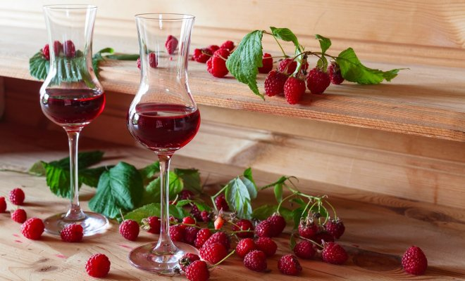
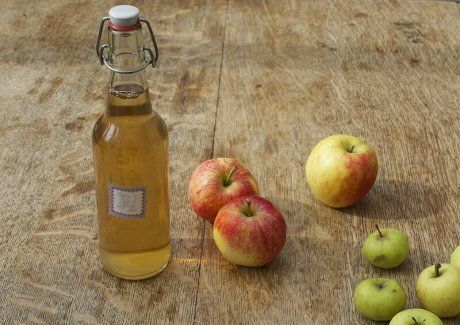
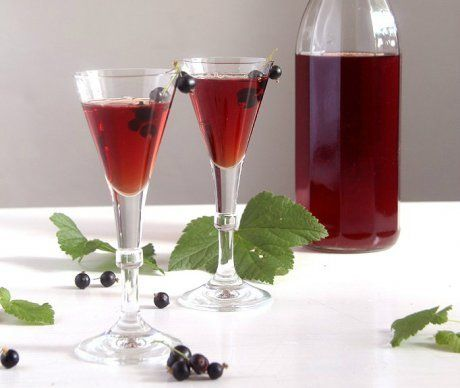
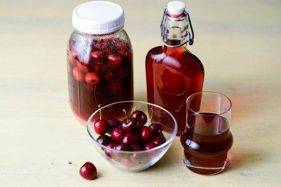
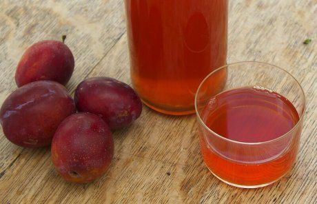

ru.depositphotos.com / igorr1
Иногда за сезон невозможно съесть все бережно заготовленное варенье. И оно начинает портиться, киснуть. Употреблять в пищу забродившее варенье уже не стоит, но его можно переработать, например, превратив в домашнее вино. Это совсем не сложно!
Приготовление домашнего вина из варенья – процесс довольно простой. Он включает в себя несколько этапов: подготовка сусла, брожение и созревание. Весь процесс занимает от 1 до 4 месяцев. Чем дольше вино настаивается, тем вкуснее оно получается.
Использовать для приготовления вина можно любое старое или прокисшее варенье, но оно должно быть без плесени. Даже малейшее содержание плесневых спор в варенье может испортить вкус готового вина.
Домашнее вино из варенья готовят без добавления дрожжей. Во-первых, специальные винные дрожжи найти не так легко, а обычные хлебопекарные для изготовления домашнего вина не подойдут. А во-вторых, дрожжи часто заменяют на изюм – он отлично справляется с брожением, благодаря содержащимся бактериям. К тому же изюм вовсе не портит вкус готового напитка, а наоборот, раскрывает его фруктово-ягодные нотки. Некоторые виноделы-любители вместо изюма используют обычный рис – с ним домашнее вино получается крепче.
Итак, как же приготовить домашнее вино из прокисшего варенья?
Домашнее вино из малинового варенья
Вино из малинового варенья обладает насыщенным ягодным вкусом и приятным цветом.
Вам понадобятся: 1 л варенья, 2,5 л воды, 150 г винных дрожжей или изюма.
Приготовление. Смешайте варенье и остывшую кипяченую воду в большой стеклянной емкости. Добавьте дрожжи или изюм, но это не обязательно – будущее вино хорошо перебродит и без них. На горлышко наденьте чистую резиновую перчатку и поставьте напиток бродить в темное место с комнатной температурой. Когда надутая от выделяемого при брожении газа перчатка на горлышке опадет, напиток можно процеживать. В среднем процесс брожения занимает 7-15 дней. Аккуратно процедите вино через марлю от мезги и перелейте в чистую емкость. Оставьте на пару дней в темном месте, чтобы выпал осадок. Затем осторожно, чтобы не поднять этот осадок, разлейте вино в бутылки. При желании добавьте еще немного сахара.
Домашнее вино из яблочного варенья

Вино из яблочного варенья будет готово уже через месяц. Оно получается очень ароматным, с интересным фруктовым вкусом.
Вам понадобятся: 1,5 л варенья, 1 стакан сахара, 1,5 л воды и 1 ст.л. изюма.
Приготовление. Воду закипятите и остудите до комнатной температуры. Положите в нее варенье, всыпьте половину стакана сахара, изюм, хорошо все перемешайте и перелейте в большую стеклянную банку. Закройте горлышко резиновой перчаткой, сделав в ней один прокол, и поставьте банку в теплое темное место. Брожение закончится, когда перчатка сдуется, а на поверхности напитка перестанут выделяться пузырьки газа. С помощью дуршлага и марли процедите вино в чистую емкость и удалите мезгу. Старайтесь при этом не "потревожить" образовавшийся на дне банки осадок. Добавьте оставшиеся полстакана сахара, перемешайте и поставьте емкость с вином в прохладное темное место. Через 3-4 недели вино можно пробовать!
Домашнее вино из варенья смородины

Смородиновое вино – это напиток с великолепным цветом, ярким ароматом и насыщенным вкусом спелых ягод.
Вам понадобятся: 1,5 л варенья, 1,5 л воды и 100 г сахара.
Приготовление. В глубокой емкости смешайте варенье с теплой кипяченой водой, добавьте половину или всю порцию сахара (все зависит от личных вкусовых пристрастий), хорошо перемешайте и поставьте в теплое место для брожения. Когда мезга (мякоть из варенья) поднимется на поверхность, брага для вина готова. Процедите ее в чистые простерилизованные банки. При желании добавьте еще сахара и поставьте вино созревать в теплое темное место на 3 месяца. Затем осторожно, с помощью трубки, перелейте его в бутылки, закупорьте и храните в прохладном месте.
Домашнее вино из вишневого варенья

Если добавить в такое вино больше сахара, получится очень вкусный десертный напиток.
Вам понадобятся: 2 л варенья, 2 л воды, 0,5-1 кг сахара и горсть сушеных вишен.
Приготовление. Смешайте варенье, воду и сахар, всыпьте сушеные ягоды вишни. На горлышко емкости со смесью наденьте резиновую перчатку с проделанным в ней маленьким отверстием. Поставьте в темное и теплое место для брожения. Затем напиток процедите, по желанию добавьте еще немного сахара и оставьте уже на 90 дней в затемненном месте. Созревшее вино аккуратно снимите с осадка, разлейте в чистые бутылки и наслаждайтесь его прекрасным вкусом.
Домашнее вино из сливового варенья

Для приготовления вина подойдет даже забродившее варенье. Это нисколько не испортит вкус напитка, наоборот, сделает его более насыщенным.
Вам понадобятся: 1,5 кг варенья, 1,5 литра воды, 1 стакан сахара, 1 ст.л. изюма.
Приготовление. Варенье смешайте с теплой прокипяченной водой, добавьте полстакана сахара и изюм. Перелейте смесь в большую бутыль, на горлышко наденьте специальный затвор или перчатку с проделанной дырочкой и оставьте на пару недель бродить в теплом месте. По окончании брожения вино процедите с помощью марли в чистую емкость, добавьте еще полстакана сахара и поставьте в темное место настаиваться. По истечении 2-3 месяцев выдержанное вино аккуратно перелейте в подготовленные бутылки, используя трубку. Закупорьте пробками и можете приглашать гостей на дегустацию.
Если варенье в вашей кладовке слегка забродило, не спешите его выбрасывать – приготовьте из него домашнее вино и удивите своих домочадцев и гостей необычным вкусным напитком.